作者：创世魂
● 预设项目数据
预设项目数据通过“列表项目”属性设置，
在属性栏设置本属性后，点击属性值的按钮就可以打开列表项目的设计器。
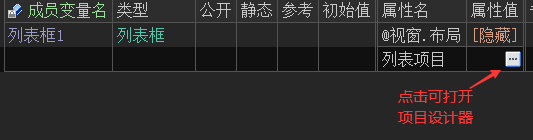
打开设计器后点击“向后插入”按钮并设置“标题”即可添加项目，最后点击“确定”即可保存。
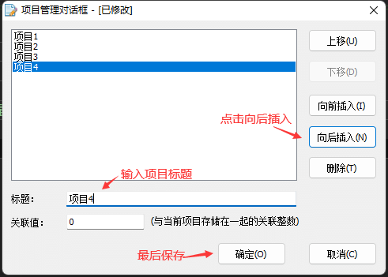
保存后会自动生成项目所需的文本数据。
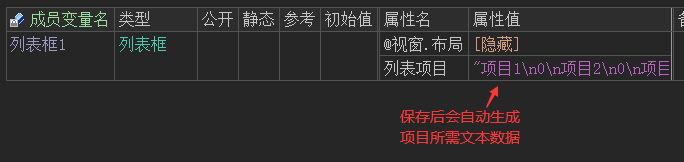
最终效果如下：
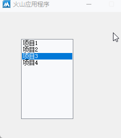
如果需要软件运行后，默认选中某个项目，通过“现行选中项”即可设置。
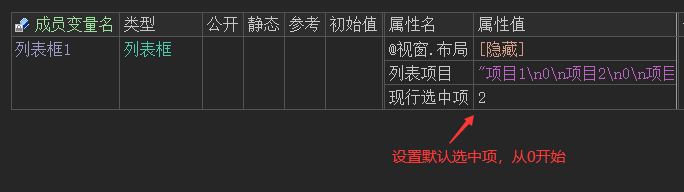
软件运行后会默认选中第三个项目。
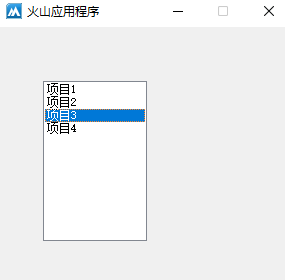
● 加入项目
帮助文档如下图：
本方法共有两个参数。
参数1：提供要添加的项目文本。
参数2：提供项目的附加数据，默认为0可忽略。
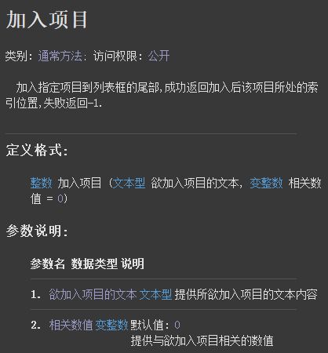
代码编写如下图：
按钮点击后调用本方法添加即可。
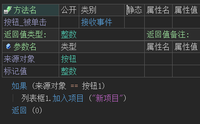
运行效果如下图：
按钮点击后就会在项目末尾加入新项目。
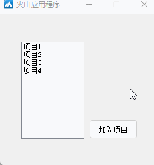
● 插入项目
帮助文档如下图：
本方法共有三个参数。
参数1：提供插入的位置，从0开始，且需要小于等于项目数量。
参数2：提供要插入的项目文本。
参数3：项目附加数据。
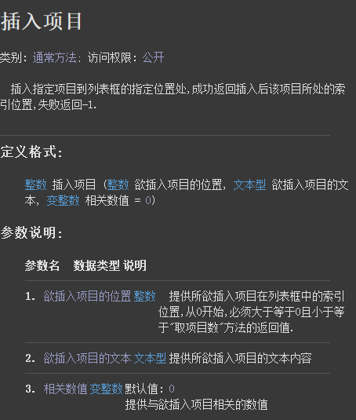
代码编写如下图：
按钮点击后在列表首插入项目。
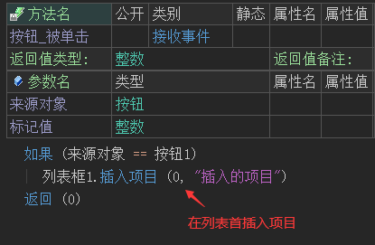
运行效果如下图：
最终列表首被插入新的项目。
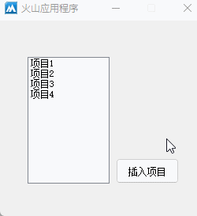
● 修改项目
帮助文档如下图：
修改项目需要使用“置项目文本()”方法，本方法共有两个参数。
参数1：提供要修改项目的索引，从0开始。
参数2：提供修改的新文本。
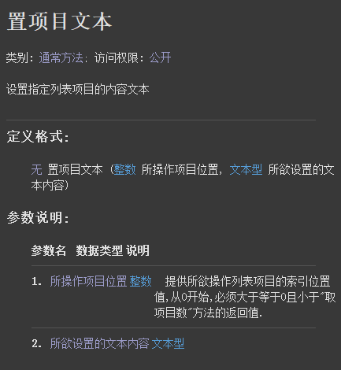
代码编写如下图：
按钮点击后，如果参数1提供“现行选中项”属性，即可修改选中项的文本。
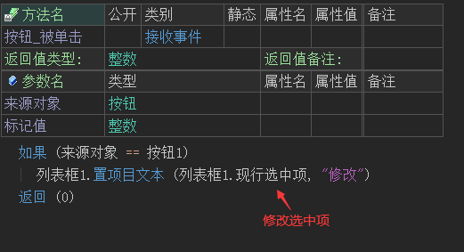
运行效果如下图：
最终可以修改被选中的项目。
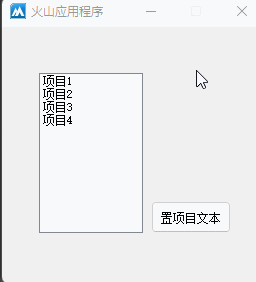
● 删除项目
帮助文档如下图：
本方法只有一个参数，提供项目索引即可删除项目。
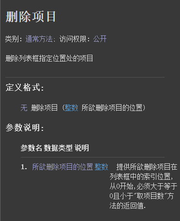
代码编写如下图：
利用“逆向计次循环”命令，可循环删除所有项目，达到清空项列表框的目的。
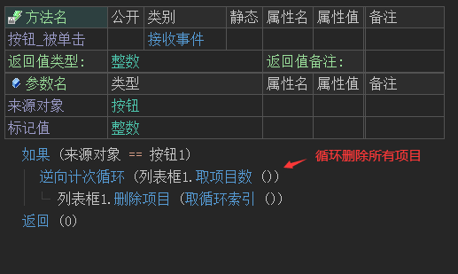
运行效果如下图：
最终所有项目被删除。
注：也可以直接调用“清空()”方法实现相同的效果。
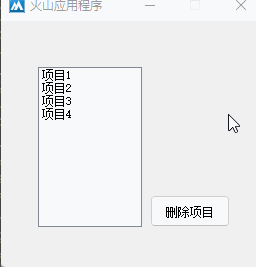
● 取项目文本
帮助文档如下图：
本方法只有一个参数，提供项目索引即可取出项目文本。
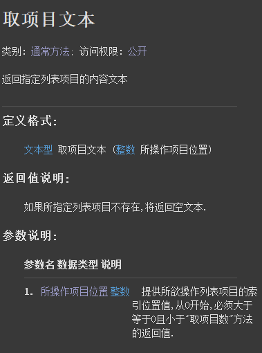
代码编写如下图：
如果想要在项目被选择时取出项目文本，可在“列表项被选择”事件中调用本方法，同时结合“现行选中项”读属性即可实现在项目选择时读取项目文本。
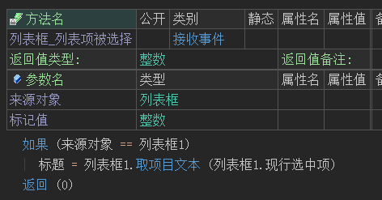
运行效果如下图：
最终项目选择时，窗口标题会同步项目文本。
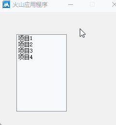
● 允许选择多项
帮助文档如下图：
本属性用于设置列表框是否支持多选，属性值提供为真则表示支持多选。
注：本属性不支持动态调用。
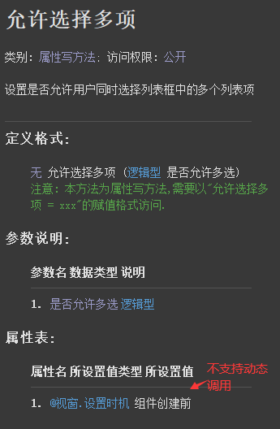
代码编写如下图：
1、首先在属性表中设置本属性值为真。
2、添加“列表项被选择”事件后首先清空编辑框内容。
3、调用“取所有被选择项目()”方法即可取出所有被选择的项目索引。
4、循环所有被选择的项目索引，继而取出所有被选择的项目文本。
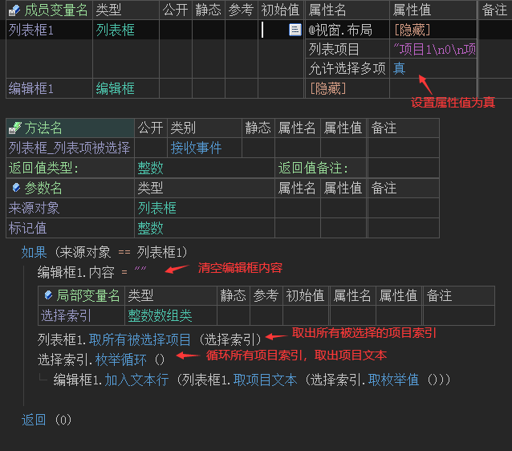
运行效果如下图：
最终项目进行多选时，会取出所有被选择的项目文本。
注：除了通过鼠标点击拖动进行多选外，还支持按下ctrl键进行多选。
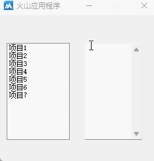
● 多列
帮助文档如下图：
用于设置列表框是否支持多列显示。
注：本属性不支持动态调用。
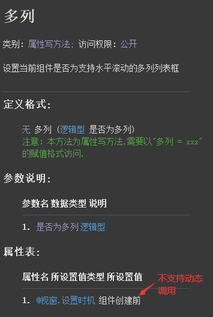
代码编写如下图：
列表框默认为单列显示，将其设置为真后，当列表框内容无法完整显示时会自动进行多列显示。
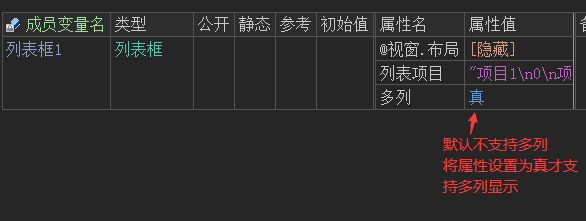
多列效果如下：
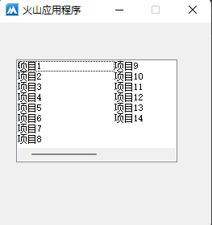
● 查找项目
帮助文档如下图：
查找项目可直接使用“选择”方法实现，其帮助页如下：
本方法只有一个参数，提供要选择的项目文本即可，如果列表中存在重复的项目，则会选择首个查找到的项目，并返回项目索引。
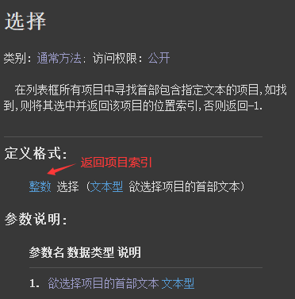
代码编写如下图：
按钮点击后查找“项目9”将其索引值在信息框中。
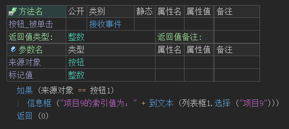
运行效果如下图：
最终按钮点击后会选中“项目9”同时返回索引值。
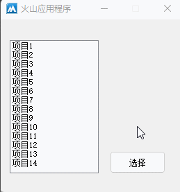
● 选择项目
帮助文档如下图：
本方法通过项目索引可选择或取消选择该项目。
参数1：提供项目索引即可。
参数2：默认为真表示选中项目，提供假则可以取消选择。
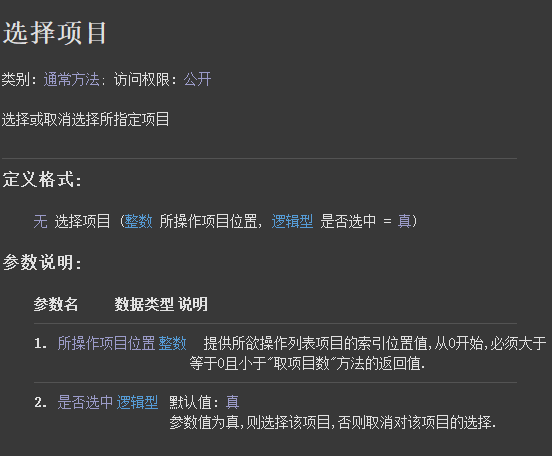
代码编写如下图：
按钮点击后取消选择首项目。
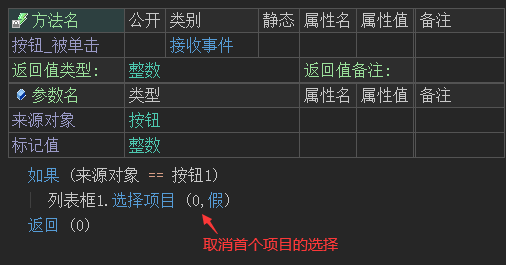
运行效果如下图：
最终首项目可取消选择。
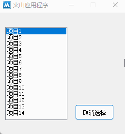